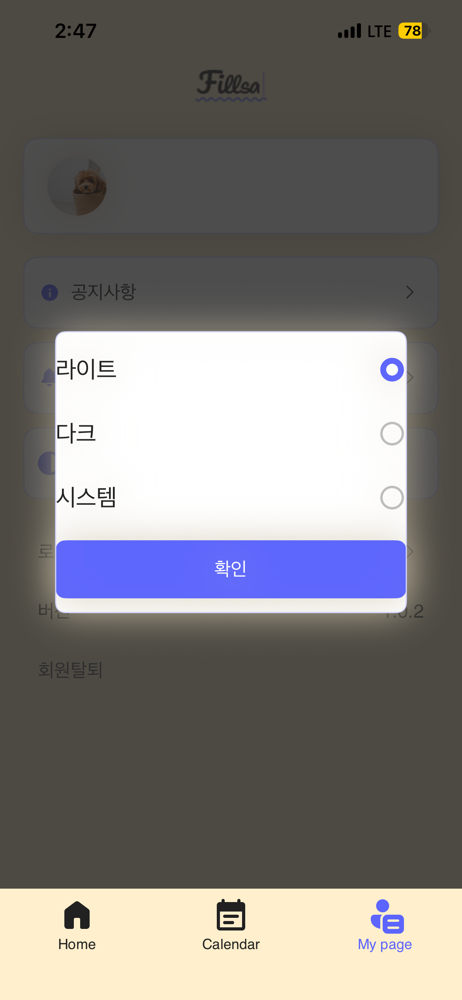
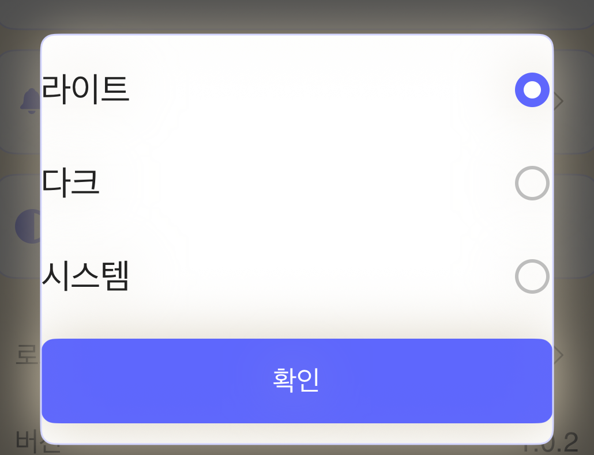
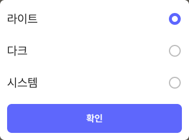

01 · MY PAGE
차이 확인테마 선택 팝업
부모의 화면 여백과 카드 내부 패딩으로 팝업 경계를 맞추고, 팝업이 열린 동안 하단 탭까지 같은 딤으로 덮습니다. 테마 선택과 확인 동작은 유지합니다.
QA에 제출된 현재 화면
iOS 캡처 · 테마 팝업 열림

Figma 기준 화면
노드 2929:11178 · 360×634pt · 팝업 320×237pt

팝업 영역 확대 비교
QA 캡처

Figma 팝업

이슈 목적
360pt 화면에서 부모 좌우 여백 20pt로 카드가 320pt가 되고, 라이트·다크·시스템 행과 확인 버튼은 카드 안에서 좌우 12pt 여백을 갖습니다. 팝업 밖 화면 전체에 딤이 적용됩니다.
확인한 원인
MyPageThemeDialog는 배경을 내용 폭 296pt에 그린 뒤 바깥 프레임을 320pt로 만듭니다. 딤은 MyPageView 내부라 앱 하단 탭을 덮지 못합니다.
수정 계획
팝업의 부모에 좌우 20pt 여백을 주고 카드는 남는 너비를 채웁니다. 카드 자식에 좌우 12pt 및 Figma의 세로 패딩·행 간격을 적용한 뒤, 완성된 카드 경계에 배경·테두리를 둡니다. 높이는 내용으로 결정하고 237pt는 기준 화면의 검증값으로 사용합니다. 팝업과 딤은 하단 탭의 공통 부모인 AppView에 올려 기존 TCA 테마 선택·확인 액션에 연결합니다.